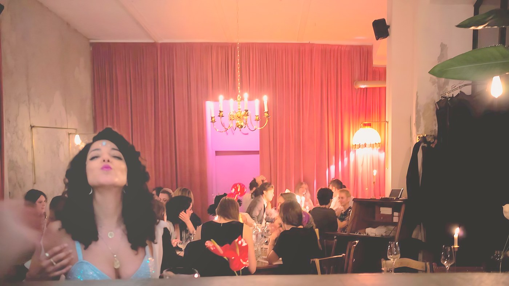
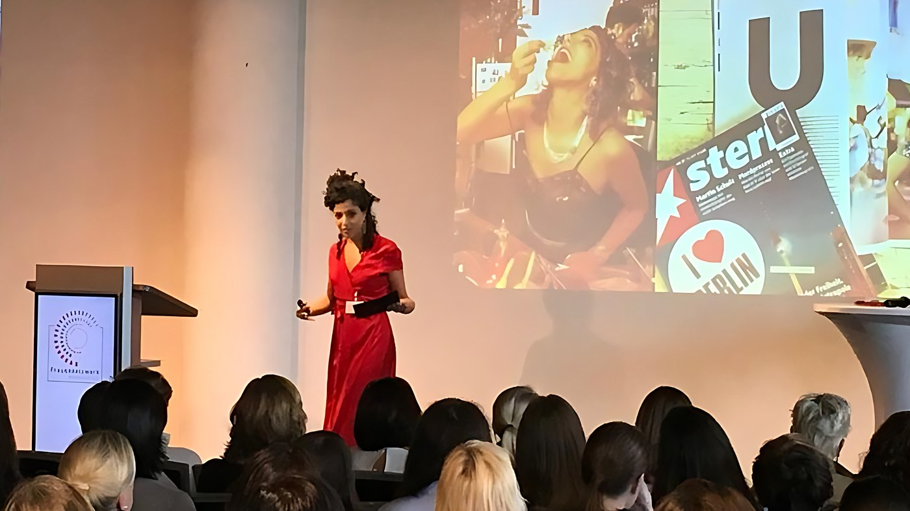
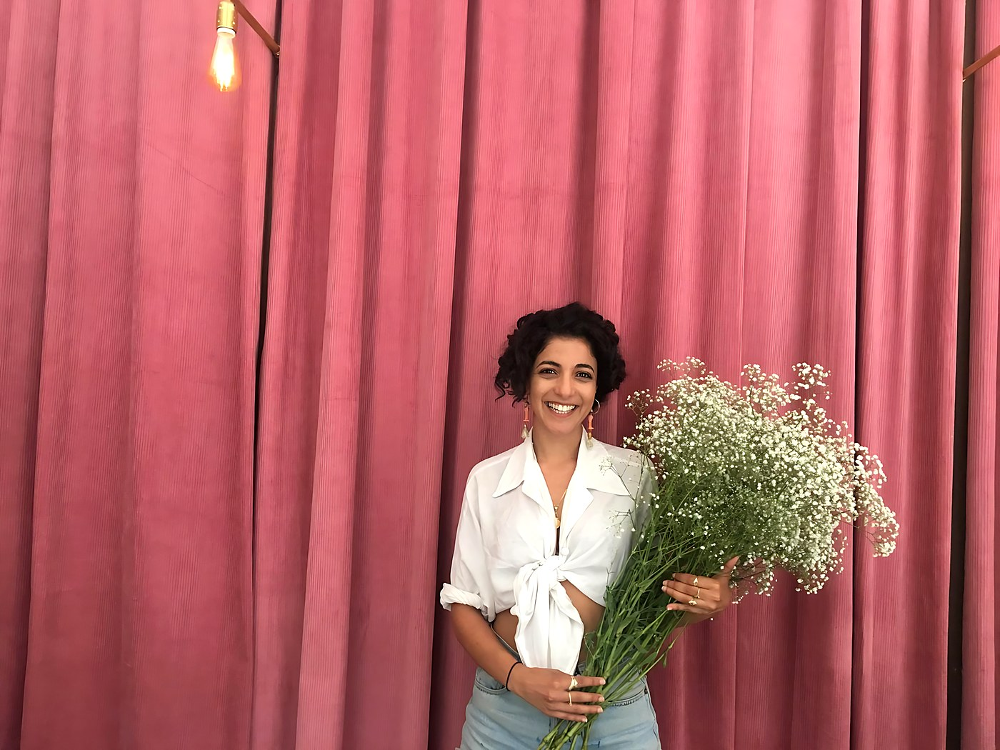
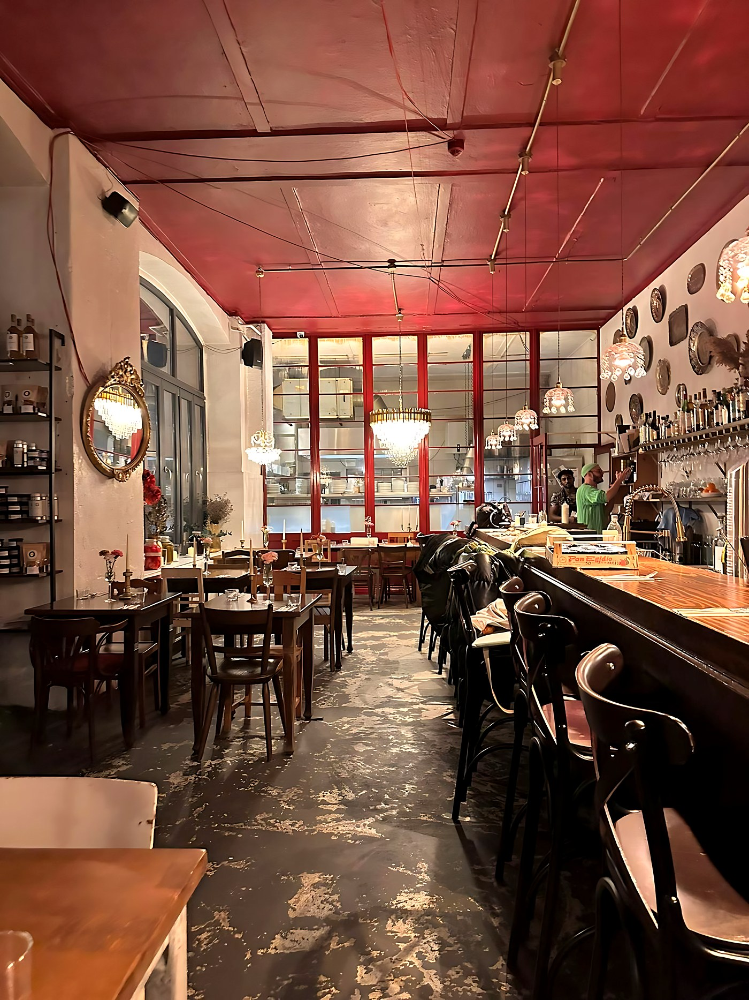
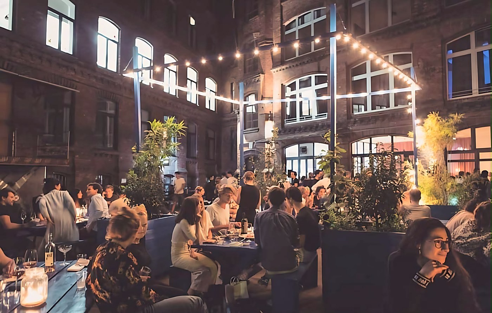

פיתוח קונספט והקמת מסעדה
מהרעיון ועד יום הפתיחה.
למייזמים ובעלי מקום, לפני פתיחה
- תוכנית עסקית ותכנון
- מיתוג וקונספט
- בניית סטנדרטים תפעוליים



שני אחיאל · יזמית ומנהלת בתחום האירוח, ברלין
אני עוזרת לבעלי מסעדות ויזמים להקים, לייצב ולפתח עסקי אירוח, על בסיס למעלה מעשור של ניהול והקמה של מסעדות, מותגים ואירועים.
01הפרופיל
התחלתי בשירות ובבר בתל אביב והתקדמתי לניהול אירועים. מאז הקמתי ונהלתי מסעדות בברלין, וליוויתי שיתופי פעולה עם רשתות מלונות.
את Yafo התחלתי במקום בלי מטבח ובלי בר, ובניתי הכל מאפס. ניקיתי את הרצפה אחרי סגירה, עבדתי מול ספקים, תיקנתי בעצמי מה שצריך, וגייסתי עובד אחרי עובד.
מכאן צמחו מסעדה בת 200 מקומות ישיבה, מסעדת שף, שיתופי פעולה עם מלונות וצוות של כמעט 60 עובדים. את הניסיון הזה, כבעלים וכמנהלת, אני מביאה היום לכל עסק שאני מלווה.

התחלתי בשירות ובבר בתל אביב, והתקדמתי לניהול אירועים.

מקום בלי מטבח ובלי בר הופך למסעדה ובר עם אירועים שבועיים, ולכתובת של אירוח ישראלי בברלין.

מסעדת שף בחצר לבנים גדולה בקרויצברג, עם תפריט שנבנה מחומרי גלם של חקלאים מברנדנבורג.
Yafo מתארחת במלון Amano, והלובי הופך למסעדה של ממש.
הובלת כל מערך המזון והמשקאות במלון, לפי יעדי KPI ובמודל שותפות.

ליווי בעלי מסעדות, יזמים ומלונות: הקמה, הבראה, ליווי שוטף ומיקור חוץ, וגם הרצאות על הבמה.
מאות אורחים בערב, אירועים שבועיים, חתונות ומסיבות בחצר.
02במה אני יכולה לעזור
ארבעה מסלולי עבודה, לפי השלב שבו העסק נמצא. אפשר לבחור אחד או לשלב.
מהרעיון ועד יום הפתיחה.
למייזמים ובעלי מקום, לפני פתיחה

כשהמספרים לא מסתדרים, מחזירים שליטה.
למימסעדה מלאה שלא מרוויחה, או עסק שאיבד כיוון

לעסק שעובד ורוצה לצמוח ולהתעדכן.
למימסעדות פעילות שרוצות לצמוח
הפקה והובלה של אירועים פרטיים ועסקיים, ובניית מחלקת אירועים בתוך עסק קיים.
למימסעדות, מלונות וחברות
אם אתם לא אוהבים אנשים, אתם לא עובדים באירוח.
שני אחיאל, בראיון ל־nomyblog
03למלונות
מסעדה, בר ואירועים שמנוהלים כמו עסק עצמאי בתוך המלון: אחריות על התפעול, יעדי KPI מדידים ומודל שותפות, כמו שהובלתי ב־Selina ברלין.
04איך זה עובד

כתבו עליי

05למה לעבוד איתי
את כל מה שאני מציעה עשיתי בעצמי, בברלין, כבעלים וכמנהלת. לחצו על מקום כדי לראות את התמונות.

07צור קשר
ספרו לי בכמה משפטים איפה העסק נמצא, ואחזור אליכם.
Shanini.a@gmail.com054-6644489
השאירו פרטים
נחזור אליכם תוך 24 שעות.